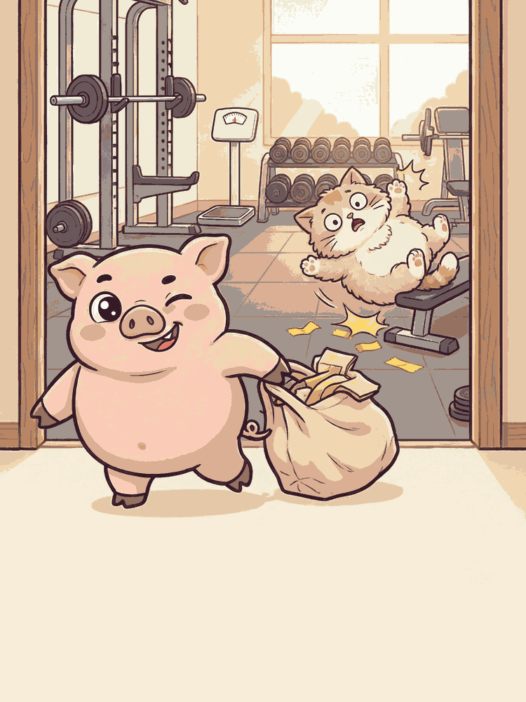

01 · AI 出单
目标摄入，按你的缺口算
每天少吃 250 / 400 / 600 千卡，三档任选。1450 千卡/天 写在单子上，不是玄学。

降妖铁馆 · 老赵的控卡科
填 5 步档案：身体、作息、常去的店、厨房里有什么。AI 按你的缺口和习惯，出今天的四餐控卡单，热量照单对账。
已用 12 / 24 格
01 · AI 出单
每天少吃 250 / 400 / 600 千卡，三档任选。1450 千卡/天 写在单子上，不是玄学。

02 · 四餐计划
早餐、午餐、晚餐、加餐，每餐标好时间槽、菜名和热量。
03 · 换菜
手头没食材？在同一热量档里换一道，食材分组表看清克重，做法编号一步步来。
04 · 热量对账
已用 12 / 24
24 格颗粒条实时对账：达标墨色、超限整条转红，今天吃没吃超一目了然。
05 · 打卡与日历
四餐三态打卡 + 饮水标记，日历回看，别让「明天开始」再骗你。
微信搜「找到狡猾的猪腰」打开小程序，5 步档案换一张今天就能用的四餐单。
打开小程序：微信搜「找到狡猾的猪腰」或扫码
验妖 or 直接填控卡档案
出单，照着吃，打卡
微信搜「找到狡猾的猪腰」
关于小程序、费用和妖兽鉴定，一次说清。
不用，微信小程序，搜「找到狡猾的猪腰」即开即用。
核心功能免费，AI 出单免费。
问卷里选素食、不吃猪肉、无乳糖、无坚果，出单自动避开。
按你的身体数据算热量，再按你的渠道和工具选菜；云端连不上时本地引擎兜底，不会开不了单。
12 问测出你是 16 只减脂妖兽里的哪只，纯娱乐引流功能，控卡才是正事。